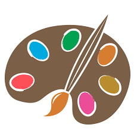

Faseeh Bhatti's Resume
Camera Operator, Boom Operator
Toggle navigation
Resume
Cover Letter
Contact
Gallery
Film Work
Art Work
Education
Rutgers University – Newark, NJ Expected graduation: May 2021
Major in Information Systems
Minor in Theater
GPA 3.5
Work Experience
Working Title “The Map” (Feature Film) –
Shooting locations TBA
, January 2019 – Present
Camera Operator
Working with a large ensemble cast.
Managing camera equipment such as Sony FS700 4k, monitors, hard drives, and receivers for the film.
Maintaining said said equipment throughout entire shoot.
Dekalog: A Finding Me Story (Web Series) –
New York, New York
, June 2017 – November 2018
Boom Operator/ Production Assistant
Captured audio for 3 episodes of the show.
Managed equipment during shoots and reserved venues for screenings of the show.
Achieved all necessary goals in a variety of environments ranging from small indoor scenes to large outdoor scenes.
Vows (Pilot Episode) –
New York, New York
, July 2018
Production Assistant
Helped prepare the set for scenes and helped coordinate lighting and props.
Acquired any tools that were not on set and were required to ensure a successful production.
Maintained a good shooting environment while the cameras were rolling.
Extra Curricular Activities
Barat Foundation –
Provence, France
, July 2015
Artist
Received scholarship to study visual art abroad in France.
Completed a team art project of a 12 foot statue of a cicada.
Held an exhibit with one personal project and one team project on display. Team project still on display at Marseille airport.
Gray Bee Ministry –
Newark, NJ
, September 2017 - Present
Founder
Founded an organization at St. Benedict’s Prep high school that donates food to the homeless.
Organized a curriculum that helped educate students on other religions.
Planned trips to churches, mosques, temples, and other areas of religious worship to introduce students to other walks of life.
Skills & Interests
Languages: English, Urdu, Hindi, Punjabi, Arabic (read only)
Technical skills: Photoshop, After Effects, Sony Vegas, Microsoft Office Suite
Interests: Film Production, Theater Production, Direction, Cinematography
Film Work
See me on the Job!

Art Work
See my Art!
Contact
Get in touch!